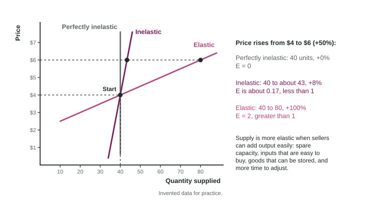

When a song goes viral, a print shop can turn out a thousand posters of the band by Friday. The concert hall where the band plays on Saturday cannot add a single seat. The same jump in price brings a flood of posters and no extra seats. Sellers, like buyers, differ in how strongly they respond to a price, and the price elasticity of supply measures it.
The formula
It is the percent change in quantity supplied divided by the percent change in price. Because price and quantity supplied move in the same direction, the answer is positive; no absolute value is needed. The benchmarks match demand:
| Value | Name | Supply curve |
|---|---|---|
| Greater than 1 | Elastic | Quantity supplied changes by a larger percent than price |
| Exactly 1 | Unit elastic | The same percent |
| Less than 1 | Inelastic | A smaller percent |
| 0 | Perfectly inelastic | Vertical: the quantity is fixed |
| Infinite | Perfectly elastic | Horizontal: any quantity at one price |
Worked example: two sellers, one price rise. The price of scarves and of posters both rise from $20 to $25 (invented data). Wren Studio's hand-knit scarves go from 100 a week to 105; Copperleaf Print's posters go from 100 to 150.
- Percent change in price. for both.
- Scarves. Quantity:
. Elasticity: . Inelastic. - Posters. Quantity:
. Elasticity: . Elastic. - Why. A printer with idle machines can add posters in minutes; a scarf takes a skilled knitter hours.
Quantity goes on top, as with demand. Dividing 25% by 5% gives 5, which would wrongly call the scarves elastic.
What makes supply elastic

Supply elasticity is about how easily sellers can change output, not about buyers.
- Spare capacity. A factory running half its machines can add output quickly; one running all night cannot.
- Inputs that are easy to get. If the materials and workers are easy to buy and hire, output can rise fast. If an input is rare (skilled knitters, a special mineral), supply is inelastic.
- Storage. Goods kept in a warehouse can be released when the price rises. Perishable goods, such as fresh fish or cut flowers, cannot be held back or added to quickly.
- Time to adjust. This is the big one. Over a week, a farm has the crop it planted. Over a year, it can plant more; over several years, new farms, factories and venues can be built. Supply grows more elastic as sellers have more time.
Some quantities are fixed no matter what: the seats in a concert hall on Saturday night, the plots of land along one beach. Their supply is perfectly inelastic. When demand rises, the whole change shows up in the price.
Why it matters
When demand rises, elastic supply lets sellers meet it mostly with more output, so the price rises only a little. Inelastic supply means the price must do the work: it rises a lot while the quantity barely moves. That is why concert tickets for a hot band jump in price while posters of the same band stay cheap. Compare two supply curves by steepness only when they pass through the same point, as in the figure: through one point, the flatter curve is the more elastic one.
On the exam
Write the formula, plug in percents with quantity supplied on top, and compare the result with 1. Then explain the result with a reason about sellers: capacity, inputs, storage or time. Reasons about buyers, such as substitutes or necessities, belong to demand elasticity and earn nothing here.